A Mountain Home
Created in the late 1950's as a vacation community for Washington D.C. residents, Blue Mountain is now a mix of summer residents and year-round families. Renowned for scenic overlooks, seasonal wildflowers, and a peaceful mountain retreat, the subdivision is a Sanitary District in Warren County, managed by an elected volunteer executive board.
2025 EDITION

TABLE OF CONTENTS
TABLE OF CONTENTS (Page 2)
TABLE OF CONTENTS (Page 3)
TABLE OF CONTENTS (Page 4)
I
GOVERNANCE & STRUCTURE
Board Structure, Meetings & Construction Requirements

I. GOVERNANCE & STRUCTURE
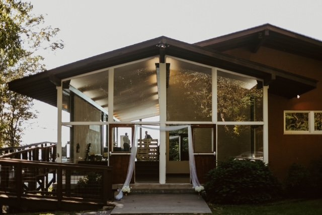
Example of quality construction that meets BMPOA architectural standards and enhances the community's mountain character
A. BMPOA OVERVIEW
The Blue Mountain Property Owners Association (BMPOA) is a Virginia Sanitary District serving the Blue Mountain community in Warren County. Our organization combines the authority of a special taxing district with the community focus of a property owners association.
About BMPOA
Created in the late 1950's as a vacation community for Washington D.C. residents, Blue Mountain is now a mix of summer residents and year-round families. The subdivision operates as a Sanitary District in Warren County, managed by an elected volunteer executive board.
All Board members are Blue Mountain property owners elected at the Annual Meeting for two-year terms.
BOARD ELECTIONS 2025
The Board nomination window is currently open and closes at midnight, June 30th. All nine positions on the Board as well as two positions on the nominating committee are up for election at the annual meeting on August 17, 2025. Any property owner may run for any position on the Board.
B. SANITARY DISTRICT EXPLAINED
1. WHAT IS A SANITARY DISTRICT?
A Sanitary District is a special taxing district allowed by the Code of Virginia. It provides a mechanism for communities like ours to fund necessary infrastructure and services through a dedicated tax assessment on properties within the district.
Key Benefit
Our Sanitary District status ensures that all property owners, including developers, contribute fairly to the maintenance of our roads and community assets.
2. BLUE MOUNTAIN SANITARY DISTRICT
The Blue Mountain Subdivision Sanitary District was created by Order of the Circuit Court of Warren County. By agreement with the Warren County Board of Supervisors, the BMPOA Executive Board serves as the managing agent of the Sanitary District.
3. HOW A SANITARY DISTRICT IS CREATED
Sanitary Districts are established through a formal legal process involving petition to the Circuit Court, public hearings, and court approval. This ensures proper oversight and community input in the creation process.
C. BOARD & COMMITTEES STRUCTURE
EXECUTIVE BOARD
The BMPOA Executive Board consists of nine elected property owners who serve two-year terms. Board members volunteer their time to manage community affairs and represent the interests of all property owners.
Board Responsibilities:
- Financial oversight and budget management
- Road maintenance and snow removal planning
- Community facility management (Lodge, Deer Lake)
- Policy development and enforcement
- Long-term planning and capital improvements
COMMITTEE STRUCTURE
Standing Committees:
- Nominating Committee: Oversees board election process
- Finance Committee: Budget planning and financial review
- Roads Committee: Maintenance and improvement planning
- Lake Committee: Deer Lake management and policies
- Lodge Committee: Lodge operations and rental management
Committees meet as needed and report to the full Board. Property owners are encouraged to participate in committee work.
D. MEMBERSHIP & MEETINGS
ANNUAL MEETING
The Annual Meeting is held each August and is the primary venue for community-wide decisions. All property owners are members of BMPOA and are encouraged to attend.
Annual Meeting Activities:
- Board elections
- Budget presentation and approval
- Community updates and reports
- Policy discussions and voting
- Open forum for community input
BOARD MEETINGS
Regular Board meetings are held monthly and are open to all property owners. Meeting schedules and agendas are posted on the community website and distributed via email.
Meeting Information:
- Frequency: Monthly (typically second Saturday)
- Location: The Lodge or announced alternate location
- Time: 10:00 AM
- Public Comment: Time allocated for property owner input
SPECIAL MEETINGS
Special meetings may be called as needed to address urgent community matters. Notice requirements and procedures are outlined in the BMPOA bylaws.
E. NEW HOME CONSTRUCTION REQUIREMENTS
OVERVIEW
All new construction and major renovations in Blue Mountain must comply with established architectural and community standards. These requirements help preserve property values and maintain the character of our mountain community.
APPROVAL PROCESS
Required Steps:
- Initial Consultation: Contact the Board before beginning design
- Plan Submission: Submit architectural plans and site analysis
- Board Review: Plans reviewed at next scheduled Board meeting
- Approval Letter: Written approval required before construction
- Inspection: Final inspection upon completion
DESIGN STANDARDS
Architectural Requirements:
- Mountain-appropriate design and materials
- Minimum setback requirements from roads and property lines
- Height restrictions to preserve views
- Natural landscaping and tree preservation
- Driveway and access road specifications
Environmental Considerations:
- Steep slope building restrictions
- Stormwater management requirements
- Well and septic system placement
- Fire safety and defensible space requirements
Important Note
Construction approval from BMPOA does not replace the need for Warren County building permits and inspections. Property owners must comply with all county requirements in addition to BMPOA standards.
DETAILED CONSTRUCTION REQUIREMENTS
Preamble (September 2024 Update)
Works in conjunction with Blue Mountain Declaration of Protective Covenants, Conditions & Restrictions and BMPOA Bylaws (available on BMPOA.org under "Homeowners")
All submissions/questions go to ARC Chair via "Contact Us" on BMPOA "Homeowners" page; include Name, Email, Property Address; contractors must include sponsoring owner
PRE-CONSTRUCTION REQUIREMENTS
Notification Process
Before applying for any Warren County building permit or zoning variance, owner must notify ARC Chair (include contractors/agents). Submit in writing via return-receipt mail. ARC Chair (or designee) will respond in writing within 30 days with:
- Approval
- Disapproval (with reasons)
- Request for additional information (owner then has 30 days to supply; ARC has 30 days to respond). If no response in 30 days, deemed approved.
Plan Approval
Construction may not begin until building site plan and detailed plans (materials list, tree removal plan) are approved in writing by ARC. Any deviation from approved plans risks legal action.
Construction must be sited unobtrusively—use natural flora to screen from access roads. Only remove trees needed for foundation, septic field, and driveway unless extra clearing is approved. All exterior work (painting, siding) completed within one year of start.
BUILDING REQUIREMENTS
Allowed Structures
- One detached single-family dwelling per lot
- One private garage per lot
- One accessory building per lot
Exterior Materials
- Wood or wood-look siding (cedar lap, HardiPlank, solid-surface synthetics)
- No vinyl siding
- Solid log homes acceptable
- ARC may grant exceptions case-by-case
Color Requirements
- Muted, nature-reflective colors (greens, browns, tans)
- No bright or vibrant colors
Fire Safety
- Fire-resistant materials strongly advised for exterior (roof, siding, decking)
SETBACK REQUIREMENTS
Road Setbacks
- ≥ 75 ft from centerline of Route 638
- ≥ 70 ft from centerline of any internal BMPOA road/right-of-way
Property Line Setbacks
- ≥ 20 ft from each side line
- ≥ 25 ft from rear line of any lot
- ARC/Board may grant exceptions to side/rear setbacks
Size Requirements
- Minimum dwelling size: 1,000 sq ft living space
- Manufactured homes must meet Class A design criteria
- Garage/accessory building must match primary structure's design and materials
ENVIRONMENTAL REQUIREMENTS
Tree and Vegetation Management
- Trees felled during construction must be staged unobtrusively or removed
- ARC may allow limited scenic view clearing but not extensive clearing
- No permanent outside outhouses allowed
BUILDING ON UNPAVED ROADS
Lot developer must construct roadway within platted easement to BMPOA specifications:
- 3″ compacted #3 gravel base + 2″ crusher run surface
- 10 ft width between ditches
- Proper grading/crowning
- Culverts at low points
Once inspected/accepted by BMPOA Road Committee, maintenance assumed by BMPOA.
ACCESSORY BUILDING REQUIREMENTS
General Requirements
One accessory building per 1-acre lot (other than a garage) if:
- Complies with Warren County setback/size/height ordinances
- Matches primary structure in style/materials
- Pre-approved in writing by ARC
Warren County Definitions
- Building: Any roofed structure supported by walls/columns
- Permit Exception: Accessory structures < 200 sq ft in side/rear yard do not require County permit but still need ARC approval
- Height Limit: 12 ft average height (average of eaves to ridge and wall height)
Accessory Building Setbacks
- Cannot be placed forward of primary residence's front plane
- ≥ 50 ft from front property line or any public/private road
- ≥ 10 ft from side lot lines
Special Provisions
- Nonconforming Structures: Pre-1992 accessory buildings are grandfathered by County but require ARC pre-approval to avoid covenant violations
- Foundations & Additions: Accessory buildings (on pilings, skids, slabs) must be in side/rear yard
- Addition Rule: Within 4 ft of primary structure, considered an addition: requires County permit and must meet primary structure setbacks/height
FENCE REQUIREMENTS
Only split-rail fences allowed. Submit design/materials plan to ARC for written approval. Exceptions case-by-case based on compatibility.
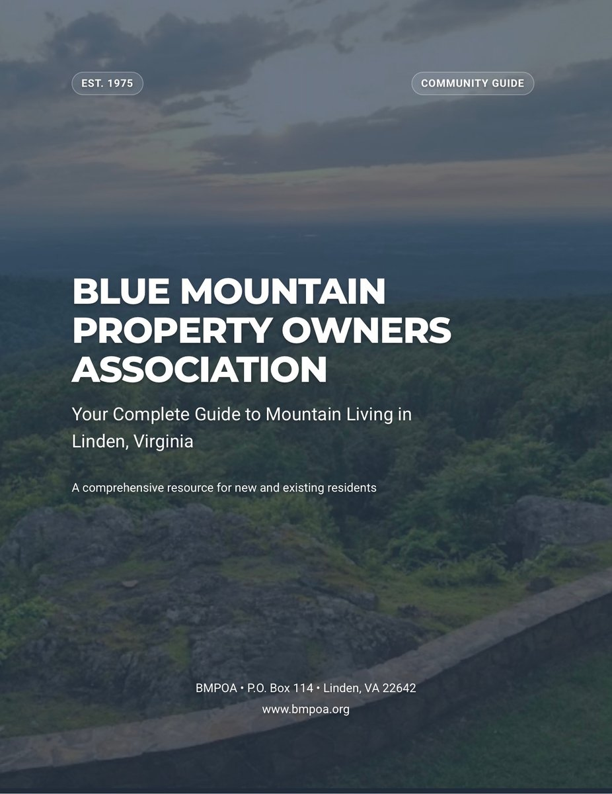
Example of professional document presentation standards expected in BMPOA architectural submissions
Additional mountain overlook showcasing the scenic views that construction projects must preserve
COMPLIANCE AND ENFORCEMENT
Violation Process
- Notification: BMPOA/ARC notifies owner in writing of violation and required corrective action
- Initial Response: Owner has 60 days to correct or 20 days to submit alternative plan/timetable
- Alternative Plan Review: ARC has 30 days to approve/disapprove alternative plan; no response = deemed approved
- Final Compliance: If alternative denied, owner has 60 days to comply
Appeals Process
- Appeals to Arbitration Committee within 30 days
- If denied, owner must comply within 30 days
- Board may pursue legal action for continued non-compliance
Final Reminder
ARC approval required even after County approval; violations subject to legal action.
II
A MOUNTAIN HOME
History, Residents & Natural Beauty
II. A MOUNTAIN HOME
A. COMMUNITY ORIGINS
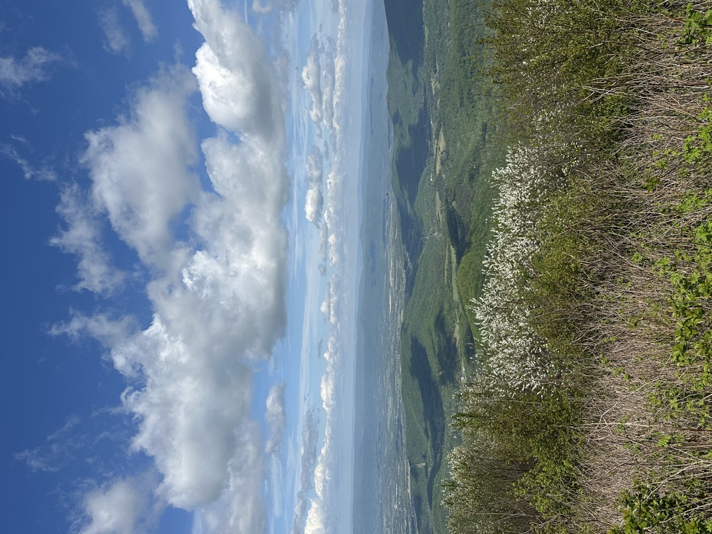
Scenic mountain vista showcasing the natural beauty that attracted the original developers to Blue Mountain in the late 1950s
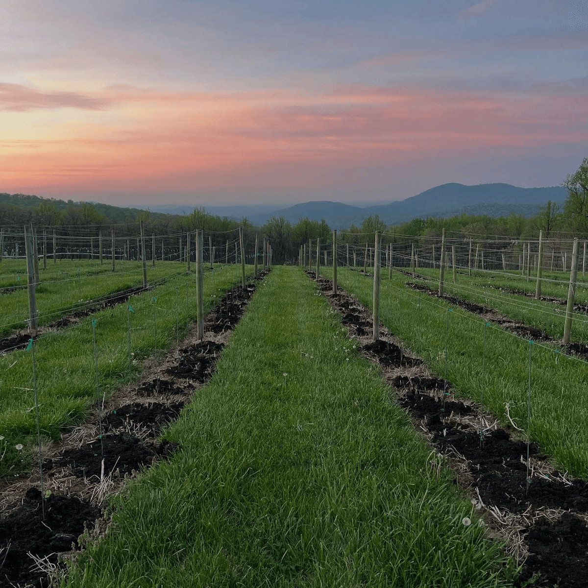
The verdant vineyard landscape that characterizes Blue Mountain's agricultural heritage and wine-making tradition
Virginia state flag representing our community's proud heritage in the Commonwealth of Virginia
Created in the late 1950's as a vacation community for Washington D.C. residents, Blue Mountain began as an escape to Virginia's mountain country. The original developers recognized the unique appeal of this location - combining accessible distance from the nation's capital with the tranquil beauty of the Blue Ridge Mountains.
Historical Development
The subdivision was carefully planned to preserve the natural mountain environment while providing modern conveniences for families seeking a retreat from city life. Early development focused on minimal environmental impact and preservation of scenic overlooks.
B. SEASONAL AND PERMANENT RESIDENTS
Blue Mountain has evolved from its origins as a vacation community into a diverse mix of seasonal residents and year-round families. This unique blend creates a dynamic community that honors both its recreational heritage and its role as a permanent home for many families.
Seasonal Residents
- Washington D.C. area families maintaining vacation homes
- Multi-generational families with inherited properties
- Weekend and summer retreat users
- Retirees with seasonal residency patterns
Year-Round Residents
- Families who have made Blue Mountain their primary residence
- Remote workers enjoying mountain lifestyle
- Retirees seeking peaceful mountain living
- Local professionals commuting to nearby towns
C. NATURAL BEAUTY & WILDLIFE
Blue Mountain is renowned for its stunning natural beauty, offering residents and visitors spectacular mountain views, diverse wildlife, and seasonal wildflower displays that make this community truly special.
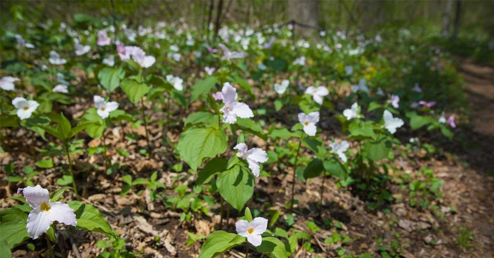
Trillium blooms - one of Virginia's most cherished spring wildflowers found throughout Blue Mountain
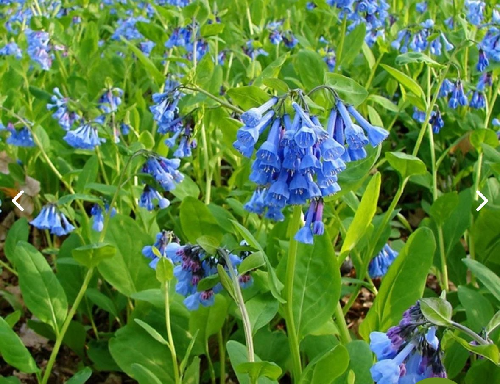
Virginia Bluebells create stunning spring displays in Blue Mountain's woodland areas
SEASONAL WILDFLOWERS
Blue Mountain's mountain environment supports a rich variety of native wildflowers that provide spectacular seasonal displays:
Spring (March-May)
- Trillium: Large white blooms in woodland areas
- Virginia Bluebells: Clusters of blue bell-shaped flowers
- Bloodroot: Pure white flowers emerging before leaves
- Wild Ginger: Hidden burgundy flowers at ground level
Summer (June-August)
- Mountain Laurel: Pink and white clustered blooms
- Wild Bergamot: Lavender bee balm flowers
- Black-eyed Susan: Bright yellow daisy-like flowers
- Cardinal Flower: Brilliant red spikes near water
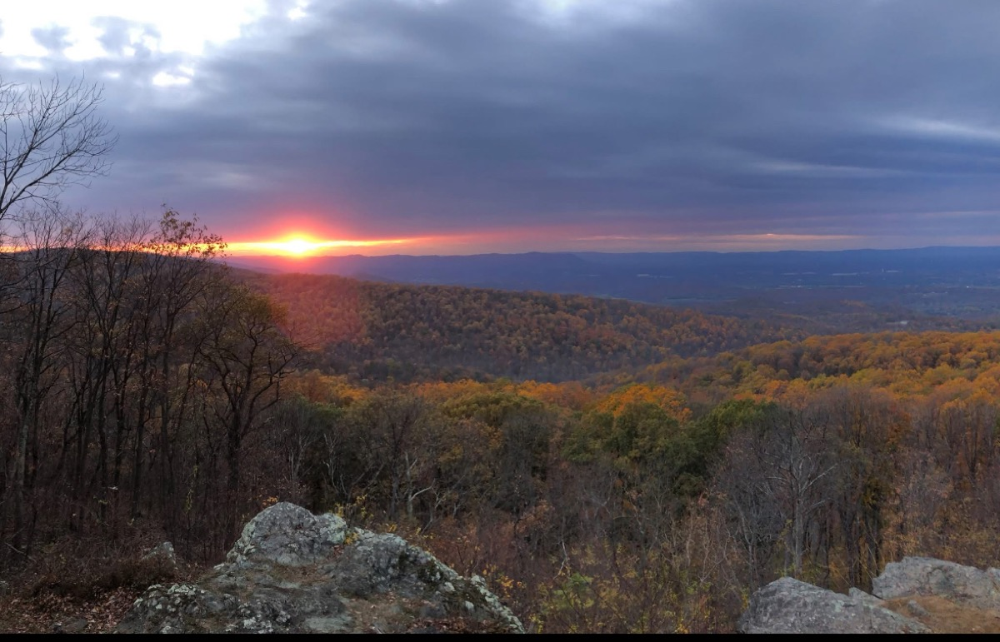
One of Blue Mountain's scenic overlooks offering panoramic views of the surrounding Virginia countryside
The stunning Blue Mountain vista that captures the essence of our mountain community

Original mountain vista view showcasing the natural beauty that has drawn residents to Blue Mountain for decades
WILDLIFE VIEWING
The mountain environment supports diverse wildlife populations that residents regularly observe:
Large Mammals
- White-tailed deer (numerous populations)
- Black bear (occasional sightings)
- Wild turkey flocks
Birds
- Hawks and eagles soaring over ridges
- Seasonal songbird migrations
- Year-round woodpecker species
- Owls active during evening hours
Small Animals
- Foxes and other small predators
- Raccoons and opossums
- Various squirrel species
- Chipmunks and other rodents
Conservation Awareness
Blue Mountain residents are encouraged to practice wildlife-friendly habits including secure trash storage, careful driving during deer crossing times, and maintaining natural landscaging that supports native species.
D. TRILLIUMS
Millions of Great White Trilliums bloom at Thompson Wildlife Management Area each spring
LOCAL ABUNDANCE
Thompson Wildlife Management Area hosts approximately 18 million Great White Trilliums (Trillium grandiflorum), creating one of Virginia's most spectacular spring wildflower displays. Peak bloom occurs in late April to early May each year, drawing nature enthusiasts from across the region to witness this remarkable natural phenomenon.
Peak Viewing
- Best Time: Late April to early May
- Location: Thompson Wildlife Management Area
- Trail Access: Multiple marked trails available
- Estimated Population: ~18 million blooms
VIEWING AREAS & ACCESS
Trillium Trail Loop
- Trailhead off Freezeland Road
- Moderate ~1 mile loop trail
- Minimal elevation gain
- Marked path through dense trillium colonies
- Hardwood canopy provides ideal growing conditions
Appalachian Trail Connector
- Junction at AT parking area off Route 340/211
- 2 mile round-trip hike
- ~700 ft elevation gain to the ridge
- Extended trillium viewing opportunities
Freezeland Road Access Point
- Parking pull-off (fits ~3 cars) on Freezeland Road
- Short unmarked 0.2 mile path into forest
- Steep and rocky terrain - hiking boots recommended
- Less crowded viewing area
OTHER NOTABLE FLORA
The same habitat that supports trilliums also nurtures other remarkable spring wildflowers:
- Lady's Slippers (Cypripedium spp.): Found in wet seeps and boggy areas
- Showy Orchids (Calopogon tuberosus): Bloom in boggy meadow areas
- Virginia Bluebells (Mertensia virginica): Line creekbanks in early spring
- Bloodroot (Sanguinaria canadensis): Pure white flowers emerge before leaves
- Wild Ginger (Asarum canadense): Hidden burgundy flowers at ground level
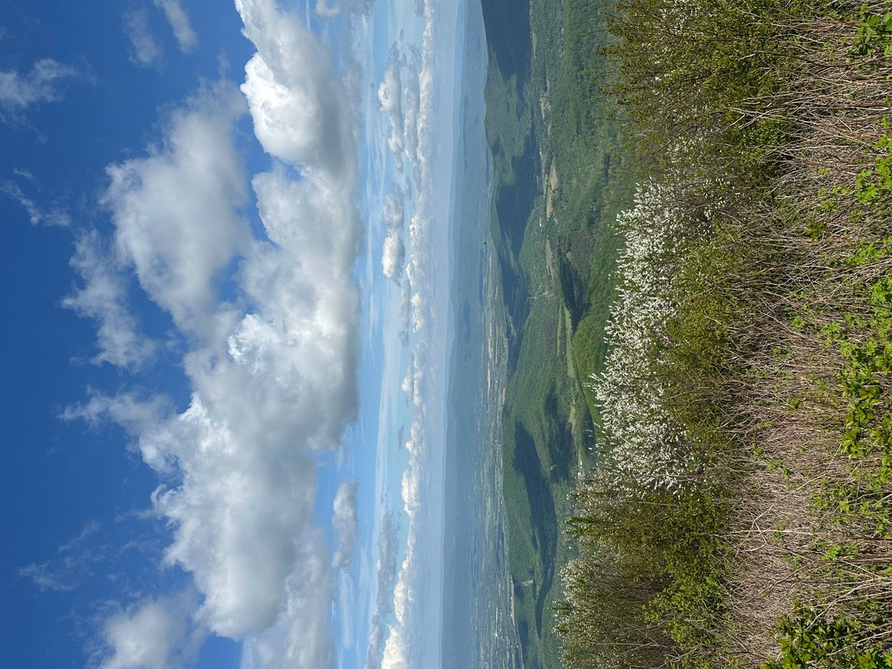
Additional scenic mountain vista demonstrating the diverse viewpoints available throughout Blue Mountain
CONSERVATION TIPS
Protect the Resource
- Do not pick or transplant trilliums - they take ≥9 years to reach flowering maturity
- Stay on marked trails to avoid trampling the understory
- Leave no trace: pack out trash, avoid damaging wildflowers
- Report any illegal picking to Virginia Department of Wildlife Resources
Viewing Ethics
- Observe and photograph from designated trail areas
- Keep noise levels low to respect wildlife
- Visit early morning or late afternoon for best lighting and fewer crowds
- Respect private property boundaries
E. PLANT RIDGE & VALLEY NATIVES
WHY NATIVE PLANTS MATTER
Native plants are essential for maintaining the ecological integrity of the Ridge & Valley region. They provide critical environmental services that benefit both wildlife and human communities:
Environmental Benefits
- Stabilize soil and improve water quality by reducing erosion and runoff
- Provide habitat and food sources for pollinators (bees, butterflies) and wildlife
- Sequester more CO₂ than non-native species, aiding climate mitigation
- Enhance biodiversity and ecosystem resilience in the Ridge & Valley region
Practical Advantages
- Adapted to local climate and soil conditions
- Require less water, fertilizer, and maintenance
- More resistant to local pests and diseases
- Support local ecosystem food webs
RECOMMENDED NATIVE SPECIES
Perennials & Ground Cover
- Bloodroot (Sanguinaria canadensis): Early spring white flowers
- Wild Geranium (Geranium maculatum): Pink-purple blooms
- Trillium (Trillium grandiflorum): Iconic three-petaled white flowers
- Dutchman's Breeches (Dicentra cucullaria): Unique white flowers
- Wild Bee Balm (Monarda fistulosa): Lavender pollinator magnet
- Foam Flower (Tiarella cordifolia): Delicate white flower spikes
- Wild Ginger (Asarum canadense): Excellent ground cover
- Milkweed (Asclepias spp.): Essential for monarch butterflies
- Narrow-Leaf Mountain Mint (Pycnanthemum tenuifolium): Fragrant pollinator plant
Vines
- Coral Honeysuckle (Lonicera sempervirens): Red tubular flowers
- Dutchman's Pipe (Aristolochia macrophylla): Large heart-shaped leaves
- Virgin's Bower (Clematis virginiana): White fragrant flowers
- Virginia Creeper (Parthenocissus quinquefolia): Excellent fall color
Shrubs
- Oak Leaf Hydrangea (Hydrangea quercifolia): White cone-shaped flowers
- Shrubby St. John's Wort (Hypericum prolificum): Yellow flowers
- Arrowwood Viburnum (Viburnum dentatum): White flowers, blue berries
- Chokeberry (Aronia arbutifolia): White flowers, red berries
- Mountain Laurel (Kalmia latifolia): Pink and white clustered blooms
WHERE TO BUY NATIVE PLANTS
Local Nurseries
- Seven Bends Nursery - Berryville, VA (sevenbends.org)
- Yellow House Natives - Berryville (via VA Native Plant Society)
Online Resources
- Virginia Plant Atlas - vaplantatlas.org (distribution maps, seed sources)
- Plant Virginia Natives - plantvirginianatives.org
- Download "Plant Ridge & Valley Natives" PDF for detailed guidance
DEER-RESISTANT NATIVE PLANTS
For areas with heavy deer pressure, consider these native species that deer typically avoid:
Trees
- American Holly (Ilex opaca)
- Black Gum (Nyssa sylvatica)
- Flowering Dogwood (Cornus florida)
- Eastern Red Cedar (Juniperus virginiana)
- Sassafras (Sassafras albidum)
- Witch Hazel (Hamamelis virginiana)
Shrubs & Ferns
- Buttonbush (Cephalanthus occidentalis)
- Silky Dogwood (Cornus amomum)
- Winterberry (Ilex verticillata)
- Christmas Fern (Polystichum acrostichoides)
- Native sedges and grasses
F. FACEBOOK GROUPS
Blue Mountain residents stay connected through several Facebook groups that serve different community needs. These online forums complement official BMPOA communications and provide real-time community interaction.
Blue Mountain POA Group
Type: Private group for BMPOA members
Purpose: Informal community communication and updates
Content: Event announcements, neighbor networking, community discussions
Important Note
Official BMPOA information is always posted first on BMPOA.org. This Facebook group provides supplemental, informal communication among residents.
Typical Posts Include
- Community event reminders and photos
- Neighbor introductions and welcome messages
- General community discussions
- Sharing of local news and announcements
Blue Mountain Info Exchange
Mission: "The purpose of this forum is to foster a sense of community among our neighbors and exchange information that is pertinent to the mountain (Linden, VA). We are all neighbors, regardless of whether or not we've met each other in person. Blue Mountain is a wonderful place to be and let's hope that this group makes it a little easier for everyone to keep up to date on what's going on."
Common Use Cases
- Weather alerts and storm warnings
- Reports of downed trees or road blockages
- Power outage notifications and updates
- Vendor referrals and recommendations
- Local incident updates and safety information
- Lost and found items
- Road condition reports
Community Guidelines
- Keep posts relevant to Blue Mountain area
- Be respectful and neighborly in all interactions
- Verify information before sharing alerts
- Use clear, descriptive post titles
Blue Mountain Rescue Brigade
Mission: "Blue Mountain Rescue Brigade... is a group of us who want to do our best to ensure the wealth, life, property and safety of our mountain friends. Be it the 2-legged kind or the 4-legged type. This is intended to HELP local emergency crews and law enforcement, NOT REPLACE IT. Everyone should still dial 911 first. Then 'light-up' this site."
Emergency Response Protocol
- ALWAYS dial 9-1-1 FIRST for any emergency
- After calling 9-1-1, post to Rescue Brigade to mobilize neighbors
- Provide clear location information and type of emergency
- Coordinate with responding neighbors to assist emergency crews
Types of Situations
- Medical emergencies requiring additional support
- Search and rescue operations
- Missing persons (including pets)
- Wildlife emergencies and conflicts
- Weather-related emergencies
- Fire response coordination
Responsible Use Guidelines
- Only post verified emergencies
- Avoid spam and non-emergency posts
- Respect privacy of those involved in emergencies
- Follow instructions from emergency responders
- Update group when situations are resolved
G. WINERIES ON THE MOUNTAIN
Blue Mountain's elevation and soil conditions create ideal cool-climate growing conditions for vinifera grapes. Several local wineries take advantage of these conditions to produce exceptional wines while offering stunning mountain views and community gathering spaces.
OVERVIEW OF LOCAL WINEMAKING
Ideal Growing Conditions
- Cool mountain climate extends growing season
- Well-drained soils ideal for grape cultivation
- Elevation provides temperature moderation
- Mountain slopes offer excellent sun exposure
Winery Collaboration
- Shared crush facilities among local wineries
- Joint marketing events and tastings
- Collaborative approach to wine education
- Support for Virginia wine industry growth
Fox Meadow Winery
Address: 3310 Freezeland Road, Linden, VA 22642
Hours: Friday–Sunday, 12 PM – 6 PM (check website for holiday hours)
Signature Wines
- Chardonnay: Crisp, well-balanced white wine
- Cabernet Franc: Medium-bodied red with berry notes
- Blueberry Wine: Sweet fruit wine made from local berries
Facilities & Features
- Rustic-modern tasting room with panoramic mountain vistas
- Indoor seating and outdoor patio areas
- Seasonal live music performances
- Sunset viewing opportunities in the vineyard
Special Events
- Friday "Wine & Dine" pairing dinners
- Charity tastings and fundraising events
- Seasonal harvest celebrations
Capstone Vineyards
Address: 13400 Crimson Lane, Linden, VA 22642
Hours: Saturday–Sunday, 11 AM – 5 PM (reservations recommended on weekends)
Signature Wines
- Viognier: Aromatic white wine with floral notes
- Petit Verdot: Bold red wine with complex tannins
- Seasonal Fruit Wines: Peach and strawberry varieties
Facilities & Features
- Elevated tasting pavilion with panoramic valley views
- Outdoor terrace for al fresco tastings
- Wedding gazebo and event facilities
- Guided vineyard tours available
Special Events
- Annual Harvest Festival (September–October)
- Weekend live music series (May–September)
- Farm-to-table dinner events
- Seasonal grape harvest participation
Crimson Lane Vineyards
Address: 13334 Crimson Lane, Linden, VA 22642
Signature Wines
- Merlot: Smooth red wine with plum and cherry notes
- Malbec: Full-bodied red with rich, dark fruit flavors
- Proprietary Red Blends: Unique vineyard-specific blends
- Small-Batch Rosé: Limited production pink wine
Facilities & Features
- Elevated picnic terrace with mountain views
- Fire pits for year-round outdoor enjoyment
- Wood-fired pizza oven operating on weekends
- On-site picnic areas for family gatherings
Wine Club Membership
- Quarterly wine shipments with exclusive selections
- Access to limited release wines
- 10% discount on all wine purchases
- Priority reservations for special events
Visiting Tips
Planning Your Visit
- Check websites for current hours and seasonal closures
- Make reservations for weekend visits during peak season
- Allow 1-2 hours per winery for full tasting experience
- Consider designated driver arrangements
What to Expect
- Tasting fees typically $10-15 per person
- Most wineries offer food options or allow picnics
- Pet policies vary - call ahead if bringing pets
- Mountain weather can change quickly - dress in layers
H. HIKING TRAILS ON BLUE MOUNTAIN
Springtime overlook from Blue Mountain showing ridge-top vista with blooming mountain laurel
TRAILHEAD ACCESS & PARKING
Blue Mountain Trailhead
- GPS Coordinates: 38.9604° N, 78.4703° W
- Parking: Free gravel lot (~20 spaces)
- Facilities: Portable restroom onsite
- Signage: "Blue Mountain Overlook Trail" with map of interconnected loops
Freezeland Road Connector
- Parking: Small pull-off (fits ~3 vehicles) on gravel road
- Access: Low clearance vehicles may have difficulty
- Trail: Unmarked 0.2 mile path through mixed hardwood forest
- Connects to: Main trail network
Appalachian Trail Junction
- Location: Official AT parking lot off Route 340/211
- Distance: Approximately 10 miles north of Blue Mountain
- Signage: "Blue Mountain Spur" indicates side trail down to BMPOA ridge
- Facilities: Established parking and trail registration
TRAIL DIFFICULTY & LENGTH
Easy (Beginner)
Deer Run Loop
- Distance: 1.2 mile loop
- Elevation Gain: Less than 200 feet
- Trail Surface: Well-graded footpath, minimal obstacles
- Features: Interpretive signage, creek crossings, benches
- Time Required: 45 minutes to 1 hour
Moderate
Blue Ridge Overlook Trail
- Distance: 3.5 miles out-and-back
- Elevation Gain: Approximately 800 feet
- Highlights: Panoramic overlook at ~2,000 feet elevation
- Features: Rock outcrops, excellent sunrise/sunset views
- Time Required: 2-3 hours
Strenuous
Appalachian Connector Trail
- Distance: 5.2 miles one-way to AT summit
- Elevation Gain: Approximately 1,200 feet
- Challenges: Steep switchbacks, rocky scrambles, ladder bridges
- Trailhead: Shared with AT parking area
- Time Required: 4-6 hours round trip
TRAIL FEATURES & POINTS OF INTEREST
Scenic Overlooks
- Eagle's View: 0.5 miles from trail start; 180° vista of Shenandoah Valley and ridgelines
- Sunset Rock: South-facing ledge, popular fall-foliage photography spot
- Panoramic Point: Highest accessible overlook with views in multiple directions
Flora & Fauna by Season
Spring Ephemerals (Late April–May)
- Trilliums in dense woodland colonies
- Virginia bluebells along creek areas
- Dutchman's breeches on rocky slopes
Summer Berries (July–August)
- Wild blackberries along Deer Run Loop
- Native blueberries on sunny ridge areas
- Elderberries near water sources
Fall Foliage (Mid-October)
- Sugar maples create brilliant orange displays
- Oak species provide deep red and brown colors
- Yellow birches add golden highlights
Wildlife Year-Round
- Birds: Warblers (Blackburnian, Cerulean), thrushes, occasional bald eagles
- Mammals: White-tailed deer, occasional black bear sightings, small mammals
- Safety Note: Exercise caution with wildlife; maintain safe distances
Historical Points
- Abandoned Cabin Foundation: ~0.8 miles on Blue Ridge Overlook Trail; remnants of mid-1800s settler cabin
- Old Springhouse Ruins: ~1.5 miles on Appalachian Connector Trail; early mountain settlers' spring water collection site
- Stone Walls: Remnants of 19th-century farming boundaries
SAFETY & PREPAREDNESS
Essential Gear
- Footwear: Sturdy hiking boots with ankle support
- Clothing: Moisture-wicking layers, rain shell (mountain weather changes quickly)
- Navigation: Map & compass or GPS device (cell service is spotty on ridge)
- Hydration: ≥2 liters water per person (filtered water sources unreliable)
- Food: High-energy snacks (trail mix, energy bars, jerky)
- Emergency: First-aid kit, headlamp/flashlight with extra batteries, whistle, emergency bivy
Trail Etiquette
- Leave No Trace: Pack out all trash, do not pick plants or disturb wildlife
- Right of Way: Uphill hikers have priority over downhill hikers
- Dogs: Must be leashed at all times; owners clean up after pets
- Group Size: ≤8 people to minimize impact and noise
- Quiet Hours: Respect dawn and dusk wildlife activity periods
Seasonal Considerations
- Spring: Muddy sections, runoff crossings—waterproof boots recommended
- Summer: Ticks & chiggers prevalent—use insect repellent; avoid dawn/dusk in dense brush
- Fall: Leaf-covered roots/rocks can be slippery—carry headlamp if hiking near dusk
- Winter: Ice on rock scrambles—microspikes or crampons recommended; heavy snow may close trails
EMERGENCY CONTACTS
III
WOOD-CHIPPING PROGRAM
Annual Chipping & Fire Mitigation Program
III. WOOD-CHIPPING PROGRAM
A. ANNUAL CHIPPING & FIRE MITIGATION
All property owners within BMPOA Sanitary District are eligible for free wood chipping annually to reduce fire risk. This community-wide effort helps protect our mountain environment while providing valuable mulch material for residents.
Wood-Chipping Community Effort
- Eligibility: All BMPOA property owners in good standing (dues/taxes paid) automatically eligible
- Cost: Free service provided annually
- Purpose: Reduce fire risk and provide sustainable disposal of brush and small trees
- No Reservations: Simply place brush as directed—no advance registration needed
Program Schedule
- Timing: Chipping typically occurs early spring (duration ~1 week)
- Notification: Announced weeks in advance via BMPOA.org, newsletter, and Facebook group
- Coordinator Contact: Email wood-chipping coordinator at jcook0313@gmail.com
B. BRUSH PILE GUIDELINES
Preparation Requirements
Placement
Place brush within 5 ft of roadside
Size Specifications
- Branches ≤ 8″ diameter
- ≤ 12 ft length
- Cut branches into manageable sizes
Material Requirements
- Clean wood/brush only
- Remove rocks, metal, trash
- No non-wood debris
Collection Strategy
Collect year-round to minimize accumulation and ensure manageable piles during chipping week
Proper Stacking
- Stack loosely within 5 ft of roadway
- Do not block roads or driveways
- Ensure safe access for chipping equipment
- Keep piles manageable in size
C. WOOD CHIP ACCESS & DELIVERY
Surplus Wood Chips
Surplus wood chips delivered free of charge to homeowner property during chipping week. Extra chips dumped at The Lodge and Deer Lake dam parking areas for pickup.
Free Delivery to Your Property
Email wood-chipping coordinator at jcook0313@gmail.com to schedule free delivery during chipping week
Self-Service Pickup Locations
- The Lodge parking area - First-come, first-served
- Deer Lake dam parking area - First-come, first-served
Bring your own containers and loading tools
Wood Chip Uses
- Landscaping: Natural mulch for garden beds and around trees
- Pathways: Natural walking surfaces for informal trails
- Fire Prevention: Defensible space ground cover (less flammable than dried vegetation)
- Soil Amendment: Decomposes over time to improve soil structure
- Erosion Control: Helps prevent soil erosion on slopes
D. FIRE MITIGATION PARTNERSHIP
Virginia Department of Forestry Partnership
BMPOA partners with VA Dept. of Forestry for fire mitigation and evacuation planning.
Collaboration Areas
- Defensible Space Guidance: Professional advice on creating fire-safe zones around homes
- Evacuation Planning: Community-wide evacuation route planning and coordination
- Fire Weather Monitoring: Access to professional fire weather forecasts and alerts
- Technical Assistance: Expert guidance on fuel reduction projects
Community Coordination
- BMPOA Roads Committee: Coordinates road access for evacuation
- Public Safety Committee: Manages community evacuation zones
- Fire Safety Committee: Organizes community fire prevention efforts
Community Benefits
- Fire Risk Reduction: Removes flammable materials from around homes
- Cost Savings: Free disposal of brush and small trees
- Environmental Benefit: Sustainable use of natural materials
- Community Cooperation: Neighbors working together for mutual safety
- Professional Support: Access to state forestry expertise
Get Involved
Every property owner's participation makes our community safer. Start collecting brush throughout the year, and watch for announcements about the annual chipping schedule. Contact the wood-chipping coordinator with questions or to arrange chip delivery.
IV
FIRE SAFETY & EMERGENCY PREPAREDNESS
Wildfire Preparedness & Emergency Planning
IV. FIRE SAFETY & EMERGENCY PREPAREDNESS
A. WILDFIRE RISK UNDERSTANDING
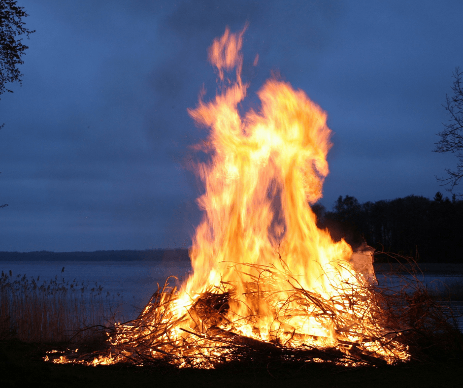
Proper debris management and fire safety practices are essential for protecting Blue Mountain homes and natural areas
Blue Mountain's beautiful mountain setting also presents wildfire risks that all residents must understand and prepare for. Our community's wooded environment, seasonal drought conditions, and mountain topography create conditions where wildfires can develop and spread rapidly.
Environmental Risk Factors
- Dense Forest Cover: Mature hardwood and pine forests surround properties
- Steep Terrain: Mountain slopes accelerate fire spread uphill
- Seasonal Drought: Summer dry periods increase vegetation flammability
- Wind Patterns: Mountain winds can rapidly change fire direction
- Limited Access: Narrow mountain roads may delay emergency response
Human-Caused Fire Risks
- Power Lines: Electrical equipment can spark fires during high winds
- Outdoor Burning: Brush piles, campfires, and burn barrels
- Vehicle Exhaust: Hot exhaust systems in dry grass areas
- Construction Activity: Equipment use during dry conditions
- Cigarettes: Improperly discarded smoking materials
Fire Season Awareness
Virginia's fire season typically runs from late February through early June, with peak risk during March and April. However, drought conditions can extend fire danger throughout summer and fall months.
High Risk Periods
- Late winter/early spring before green-up
- Extended drought periods
- High wind events
- After extended dry spells
Daily Risk Factors
- Low humidity (below 30%)
- High temperatures (above 70°F)
- Wind speeds over 15 mph
- No recent precipitation
B. EVACUATION ZONES & ROUTES
Blue Mountain's mountain location requires careful evacuation planning. Limited road access means residents must understand evacuation routes and be prepared to leave quickly if authorities order evacuation.
Evacuation Considerations
- Limited Road Access: Primary exit routes may become congested
- Mountain Terrain: Some areas more difficult to access for emergency vehicles
- Seasonal Access: Winter conditions may affect evacuation routes
- Communication: Cell service may be interrupted during emergencies
- Traffic Flow: Coordinate with neighbors to prevent traffic jams
Primary Evacuation Routes
- Main Entrance: Primary exit via main subdivision entrance
- Back Roads: Alternative routes through connecting mountain roads
- Emergency Access: Fire department emergency access points
- Foot Paths: Walking evacuation routes if roads become impassable
Evacuation Preparation Checklist
Always Ready (Go Bag)
- □ Important documents (insurance, ID, medical records)
- □ Prescription medications (7-day supply)
- □ Cash and credit cards
- □ Change of clothes for each family member
- □ Phone chargers and portable battery packs
- □ First aid kit and emergency supplies
- □ Pet carriers and pet supplies
- □ Flashlights and batteries
If Time Permits (30 minutes)
- □ Additional clothing and personal items
- □ Family photos and irreplaceable items
- □ Laptop computer and external drives
- □ Tools and emergency equipment
- □ Extra food and water for 3 days
- □ Vehicle emergency kit
Emergency Communication Plan
Establish a family communication plan that includes out-of-area contacts and meeting locations:
Contact Information
- Out-of-state family contact
- Local emergency services
- BMPOA emergency contact
- Neighbor contact information
Meeting Locations
- Primary: [Local safe location]
- Secondary: [Regional evacuation center]
- Out-of-area: [Distant family/friends]
- Shelter information from Red Cross
C. HOME FIRE PROTECTION STRATEGIES
Protecting your home from wildfire requires creating defensible space around structures and using fire-resistant materials and landscaping practices.
Defensible Space Zones
Zone 1: Immediate (0-30 feet from structure)
- Vegetation: Remove all dead or dying vegetation
- Trees: Prune branches to 10 feet from roof and other trees
- Shrubs: Keep well-watered and pruned, away from windows
- Mulch: Use rock or gravel instead of wood mulch near house
- Storage: Move firewood and propane tanks 30+ feet away
- Gutters: Keep clean of leaves and debris
Zone 2: Intermediate (30-100 feet from structure)
- Fuel Reduction: Thin vegetation to reduce fire intensity
- Tree Spacing: Maintain 10-foot spacing between tree crowns
- Understory: Remove ladder fuels that carry fire to tree tops
- Brush Piles: Remove or relocate away from structures
- Access: Maintain clear access for emergency vehicles
Zone 3: Extended (100-200 feet from structure)
- Forest Thinning: Reduce tree density to slow fire spread
- Fuel Breaks: Create natural fire breaks using roads or clearings
- Water Sources: Identify and maintain access to water sources
- Coordination: Work with neighbors on larger fuel reduction projects
Home Hardening Measures
Highest Priority
- Roof: Metal or tile roofing materials
- Gutters: Metal gutters with leaf guards
- Vents: 1/8" mesh screens on all openings
- Windows: Dual-pane tempered glass
- Siding: Non-combustible materials when possible
Medium Priority
- Decks: Fire-resistant decking materials
- Fencing: Metal or masonry fencing near house
- Outbuildings: Apply same standards to sheds and garages
- Driveways: Maintain wide, clear access routes
D. FAMILY EMERGENCY PLANNING
Every Blue Mountain family should have a comprehensive emergency plan that addresses fire evacuation, communication, and post-disaster recovery needs.
Emergency Plan Components
Family Emergency Plan
- Contact List: Emergency contacts, family members, neighbors
- Meeting Places: Primary and secondary family meeting locations
- Evacuation Routes: Multiple routes from your property
- Pet Plan: Arrangements for pets during evacuation
- Important Documents: Location of insurance and identification
- Medical Needs: Medication lists and medical device requirements
Emergency Supplies
- Water: 1 gallon per person per day for 3 days
- Food: 3-day supply of non-perishable food
- Radio: Battery or hand-crank emergency radio
- Flashlights: One per family member plus extras
- First Aid: Well-stocked first aid kit
- Tools: Multi-tool, manual can opener, local maps
Seasonal Fire Preparation
Spring Preparation (March-May)
- Clean gutters and remove leaf debris
- Prune trees and shrubs around structures
- Test and maintain fire extinguishers
- Review and update family emergency plan
- Check emergency supply expiration dates
Summer Monitoring (June-August)
- Monitor drought conditions and fire restrictions
- Maintain adequate water supply for fire suppression
- Keep vehicles fueled and ready for evacuation
- Monitor local fire weather forecasts
- Coordinate with neighbors on fire prevention
V
COMMUNITY SERVICES & AMENITIES
Roads, Refuse Collection & Local Amenities
A. ROADS & WINTER WEATHER GUIDELINES
Blue Mountain's mountain road system requires special maintenance and seasonal preparation. Our community roads are maintained through the Sanitary District with careful attention to mountain conditions and weather challenges.
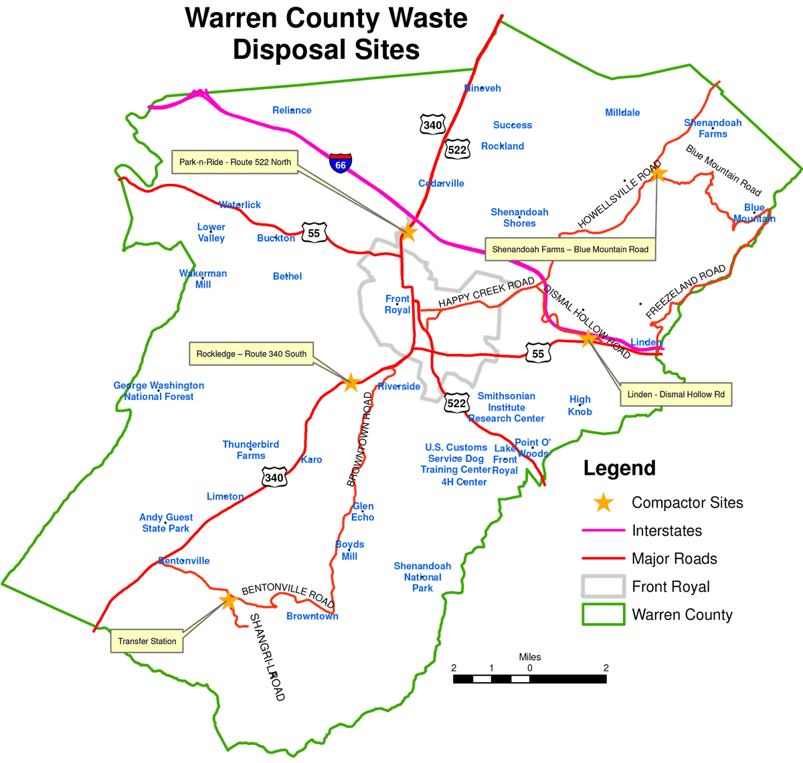
Warren County waste management convenience sites serving Blue Mountain residents
Road Maintenance
- Regular Maintenance: Grading, pothole repair, and drainage management
- Seasonal Preparation: Pre-winter inspection and preparation
- Emergency Repairs: Storm damage and washout repairs
- Long-term Planning: Road surface improvements and upgrades
- Traffic Control: Speed limit enforcement and signage
Winter Weather Management
- Snow Plowing: Primary roads cleared first, secondary roads as conditions permit
- Salt/Sand Application: Applied to steep grades and problem areas
- Priority System: Emergency access roads maintained first
- Resident Responsibility: Individual driveways not maintained by community
- Equipment Storage: Snow removal equipment stored at community facility
Winter Driving Guidelines
Vehicle Preparation
- Snow tires or all-season tires with good tread
- Tire chains available for extreme conditions
- Emergency kit including blankets, food, and water
- Full fuel tank and windshield washer fluid
- Ice scraper and snow brush
Mountain Driving Safety
- Reduce speed on steep or winding sections
- Increase following distance in winter conditions
- Use lower gears on steep descents
- Avoid sudden braking or acceleration
- Turn on headlights during snow or fog
Winter Emergency Procedures
If you become stranded on community roads during winter weather:
- Stay with your vehicle unless walking to safety is clearly safer
- Call 911 if anyone needs medical attention
- Contact BMPOA emergency line for road conditions
- Use cell phone sparingly to preserve battery
- Stay warm but ensure adequate ventilation
B. REFUSE COLLECTION & DISPOSAL
Warren County waste collection routes and disposal facility locations for Blue Mountain residents
Blue Mountain residents are served by Warren County's waste management system, which provides regular collection service and access to county disposal facilities.
WARREN COUNTY CITIZEN CONVENIENCE SITES
Five countywide sites accept bagged household waste and recycling. Bulk items (furniture, large appliances—no scrap metal) go to Bentonville Transfer Station.
Nearby Sites
- Route 522/340 (Cooley): 10037 Winchester Road, Front Royal
- Route 340 South (Rockledge): 9823 Stonewall Jackson Highway, Front Royal
- Linden: 2664 Dismal Hollow Road, Linden
- Shenandoah Farms: 47 Blue Mountain Road, Front Royal
- Bentonville: 232 Shangri-La Road, Bentonville, VA 22610 (Transfer Station)
PRIVATE TRASH HAULERS (OPTIONAL)
Freedom Disposal Services
Service Area: Northern Shenandoah Valley
Phone: 540-631-3467
Skyline Trash Service (STS)
Phone: 540-974-9418
Residents may ask neighbors for recommendations or search online for other local haulers
Regular Collection Service
- Collection Day: Weekly pickup on designated collection day
- Collection Time: Place containers at road by 7:00 AM
- Container Requirements: County-approved containers only
- Weight Limits: Maximum 50 pounds per container
- Hazardous Materials: Not accepted in regular collection
- Holiday Schedule: Modified schedule during major holidays
Recycling Program
- Materials Accepted: Paper, cardboard, plastic bottles, metal cans
- Collection Schedule: Bi-weekly recycling pickup
- Preparation: Clean containers, remove caps and lids
- Container Type: County-provided recycling bins
- Location: Place at roadside with regular trash
County Disposal Facilities
Warren County Landfill
- Location: 1400 Ben Salem Road, Front Royal, VA
- Hours: Monday-Saturday 7:00 AM - 4:00 PM
- Services: Household trash, yard waste, construction debris
- Fees: Tipping fees apply for large loads
- Requirements: Photo ID and proof of Warren County residency
Recycling Center
- Location: Multiple drop-off locations throughout county
- Materials: Extended recycling beyond curbside pickup
- Electronics: Computer and electronic equipment recycling
- Hazardous Waste: Special collection events throughout year
Special Disposal Items
Yard Waste
- Seasonal collection with regular trash service
- Must be in biodegradable bags or bundled
- County landfill accepts unlimited yard waste
- Community composting area available
Large Items
- Furniture and appliances require special pickup
- Schedule through Warren County waste management
- Additional fees may apply
- County landfill accepts with tipping fees
Hazardous Materials
- Paint, chemicals, automotive fluids
- Special collection events held quarterly
- Some materials accepted at county facility
- Never place in regular trash collection
C. INTERNET SERVICE PROVIDERS
Blue Mountain's mountain location presents unique challenges for internet and communication services. Several providers offer service to the area with varying levels of coverage and reliability.
Cable/DSL Providers
Shenandoah Telecommunications (Shentel)
- Service Type: Cable internet and phone
- Coverage: Most of Blue Mountain subdivision
- Speeds: Up to 100 Mbps download speeds available
- Reliability: Generally reliable with occasional weather-related outages
- Contact: 1-800-743-6835
CenturyLink (Lumen)
- Service Type: DSL and fiber internet
- Coverage: Limited availability in subdivision
- Speeds: Variable based on distance from equipment
- Reliability: Depends on copper line condition
- Contact: 1-800-244-1111
Satellite Internet
Starlink (SpaceX)
- Service Type: Low Earth orbit satellite internet
- Coverage: Available throughout Blue Mountain
- Speeds: 50-250 Mbps typical speeds
- Equipment: Requires dish installation and clear sky view
- Weather: Minimal weather interference
HughesNet
- Service Type: Geostationary satellite internet
- Coverage: Available throughout Blue Mountain
- Speeds: Up to 25 Mbps download speeds
- Data Limits: Monthly data allowances apply
- Weather: Can be affected by severe weather
Cellular/Mobile Hotspot
Verizon Wireless
- Coverage: Good coverage throughout most of Blue Mountain
- Service: 4G LTE and 5G where available
- Data Plans: Unlimited and metered options
- Equipment: Mobile hotspot devices available
AT&T Wireless
- Coverage: Variable coverage, some dead zones
- Service: 4G LTE service primary
- Fixed Wireless: Home internet via cellular available
- Reliability: May require signal boosters in some areas
Service Selection Recommendations
Factors to Consider
- Property Location: Distance from equipment affects DSL speeds
- Tree Coverage: Dense forest may affect satellite service
- Usage Needs: Streaming, work-from-home requirements
- Backup Service: Consider multiple providers for reliability
- Installation: Some services require professional installation
Best Practices
- Test service reliability before canceling existing service
- Consider seasonal variations in performance
- Ask neighbors about their service experiences
- Understand data limits and overage charges
- Plan for power outages affecting equipment
D. ROAD & WINTER WEATHER GUIDELINES
Winter Road Maintenance
- Salt Prohibition: Salt use prohibited on BMPOA gravel roads (damages roadbed)
- Traction Aid: Blue barrels of gravel chips are placed on steep hills for traction
- Tire Chains: Recommended—practice installation before winter
- Snow Plowing: Begins when 4″ of snow accumulates at a designated mountain location
Emergency Road Situations
Downed Trees
Residents may clear safely or report via BMPOA.org "Contact Us"
Downed Power Lines
Critical Safety: If a line falls on your vehicle, stay inside; if exiting, jump clear and move ≥ 50 ft away
Contact: Rappahannock Electric Cooperative (REC) at (800) 552-3904 or report at myrec.coop/outagecenter
Road Condition Issues
For potholes, washouts, signage issues: email bmpoaroads@gmail.com with name, email, location, photos
Fire Trail Road
Not owned/maintained by BMPOA—contact VDGIF Region 4 for issues
E. SANITARY DISTRICT SERVICES
BMPOA Sanitary District Responsibilities
As a Sanitary District, BMPOA oversees:
- Water supply & sewerage
- Garbage disposal
- Maintenance of certain roads (gravel roads; culverts; high-water crossings)
- Community building (Lodge) upkeep
Funding Structure
Collection: Taxes collected by Warren County (5% collection fee + $350 annual)
No Liens: No liens on individual properties
Benefits of Sanitary District Status
- Access to state/federal disaster relief
- Uniform assessment structure
- Improved credit status
VI
DEER LAKE RECREATION AREA
Recreation Area Access & Guidelines
VI. DEER LAKE RECREATION AREA
A. LOCATION & ACCESS
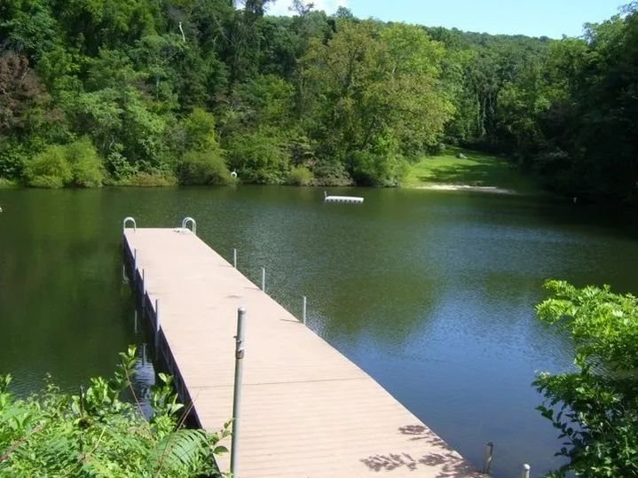
The peaceful Deer Lake dock area provides access for fishing, kayaking, and quiet water recreation
Deer Lake serves as Blue Mountain's premier recreational facility, offering residents a beautiful mountain lake setting for water activities, fishing, and peaceful relaxation. The lake and surrounding facilities provide a central gathering place for community recreation.
Lake Features
- Private mountain lake for Blue Mountain residents
- Fishing dock with bench seating
- Sandy beach area for swimming
- Kayak and canoe launch area
- Picnic tables and grilling facilities
- Parking area near lake access
Activities Available
- Fishing (bass, bluegill, and other species)
- Swimming and wading
- Kayaking and canoeing
- Family picnics and gatherings
- Wildlife observation
- Photography and nature study
Getting to Deer Lake
Deer Lake is located within the Blue Mountain subdivision and is accessible via the community road system. The lake area includes designated parking and is within walking distance of most properties in the subdivision.
Access Details
- Follow community roads to designated lake access area
- Parking available for approximately 8-10 vehicles
- Short walking path from parking to dock and beach
- Accessible year-round, weather permitting
B. RECREATIONAL AREA PASSES
Access to Deer Lake is restricted to Blue Mountain property owners, their families, and authorized guests. A pass system helps manage usage and maintain the lake as a peaceful community amenity.
Property Owner Passes
- Automatic Access: All current property owners have lake privileges
- Family Members: Immediate family included in ownership privileges
- No Fee: Lake access included in property ownership benefits
- Year-Round: Access available all seasons, weather permitting
Guest Access
- Accompanied Guests: Must be with property owner or family member
- Day Use Only: Guest access limited to daylight hours
- Responsibility: Property owner responsible for guest behavior
- Guest Limits: Reasonable number of guests per property owner
Seasonal Access
Summer Season (May - September)
- Full lake access and all amenities available
- Swimming area maintained and monitored
- Peak usage period - arrive early for best parking
- Lake Committee actively maintains facilities
Winter Season (October - April)
- Lake access available but limited amenities
- No swimming area maintenance
- Fishing still available (check ice conditions)
- Snow may affect road access to parking area
C. LAKE & BEACH RULES
To ensure Deer Lake remains a safe and enjoyable facility for all residents, specific rules and guidelines govern its use. These rules help preserve water quality, protect wildlife, and maintain a peaceful environment.
Swimming & Water Safety
- Swim at Your Own Risk: No lifeguard on duty - swimming is unsupervised
- Children: Must be supervised by adults at all times
- Hours: Daylight hours only - no night swimming
- Weather: No swimming during storms or severe weather
- Buddy System: Never swim alone - always have someone present
- Emergency: Emergency contact information posted at lake area
Fishing Guidelines
- Valid License: Virginia fishing license required for ages 16+
- Catch and Release: Encouraged to maintain fish populations
- Bait and Tackle: No live bait to prevent disease introduction
- Dock Usage: Share dock space courteously with other anglers
- Clean Up: Remove all fishing line and tackle
- Quiet Hours: Respect early morning and evening quiet times
General Lake Rules
- No Motorized Watercraft: Only human-powered boats allowed
- Noise Levels: Keep activities peaceful and respectful
- Pets: Dogs on leash only, clean up after pets
- Trash: Pack out all garbage - leave no trace
- Fires: Only in designated grill areas, fully extinguish
- Parking: Use designated parking area only
- Hours: Lake access from dawn to dusk
Environmental Protection
Deer Lake is a natural mountain lake ecosystem that requires protection to remain healthy and beautiful:
Water Quality
- No soaps, shampoos, or chemicals in lake water
- No feeding of waterfowl or fish
- Report any water quality concerns to Lake Committee
Wildlife Respect
- Observe wildlife from distance - do not approach or feed
- Protect nesting areas during breeding seasons
- Keep noise levels low to avoid disturbing animals
Lake Committee Contact
The Lake Committee manages Deer Lake facilities and addresses user concerns. Contact information is available through the main BMPOA contact directory in Section IX of this guide.
VII
THE LODGE
Lodge Rental Information & Usage Guidelines
VII. THE LODGE
A. LODGE LOCATION & FEATURES
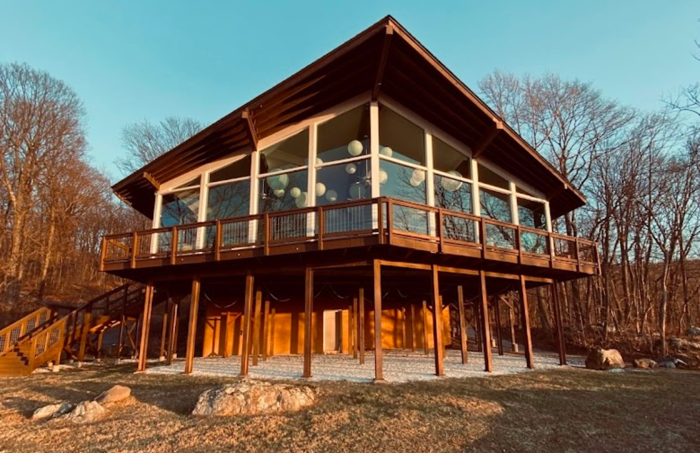
The Blue Mountain Lodge - a beautiful mountain facility available for community events and private rentals
The Blue Mountain Lodge serves as the community's central gathering place and event venue. Located in the heart of the subdivision, the Lodge provides a beautiful mountain setting for both community functions and private celebrations.
Facility Features
- Spacious main hall with mountain views
- Full kitchen facilities for catering
- Stone fireplace for year-round ambiance
- Outdoor deck overlooking the valley
- Parking area for multiple vehicles
- Tables and chairs for various event sizes
Typical Uses
- Community meetings and board meetings
- Wedding receptions and anniversaries
- Birthday parties and family reunions
- Holiday celebrations and potluck dinners
- Memorial services and life celebrations
- Seasonal community gatherings
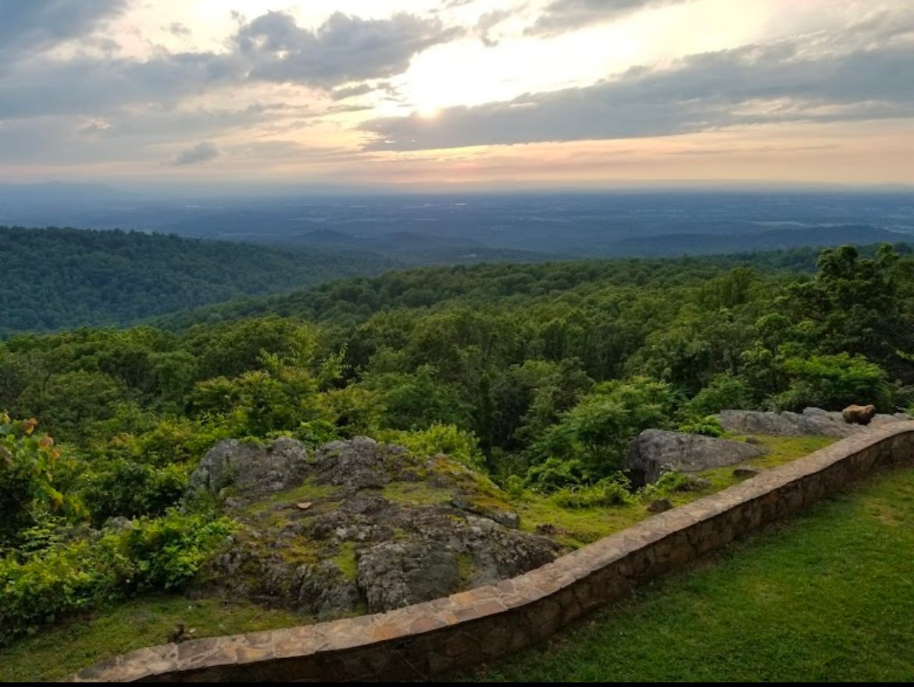
The scenic overlook view from the Lodge area, showcasing the spectacular mountain vistas available to event guests
B. RENTAL INFORMATION & PRICING
The Lodge is available for rental by Blue Mountain property owners and their guests. Rental fees help maintain the facility and support community operations.
Rental Rates
| Event Type |
Property Owner Rate |
Guest Rate |
Deposit |
| Community Meeting |
No charge |
N/A |
N/A |
| Private Party (4-6 hours) |
$150 |
$200 |
$100 |
| Wedding Reception |
$250 |
$350 |
$150 |
| All Day Event |
$300 |
$400 |
$200 |
What's Included
- Use of main hall and kitchen facilities
- Tables and chairs (seating for up to 60)
- Basic kitchen equipment and utensils
- Parking area access
- Outdoor deck usage
Renter Provides
- All food, beverages, and catering
- Linens, decorations, and special equipment
- Setup and cleanup of event areas
- Trash removal and facility cleaning
- Any additional chairs beyond 60-person capacity
Booking Process
- Check Availability: Contact the Lodge Committee to verify date availability
- Submit Application: Complete the Lodge rental application form
- Pay Deposit: Submit required deposit with signed agreement
- Pre-Event Meeting: Meet with Lodge Committee for facility walkthrough
- Final Payment: Pay remaining balance before event date
- Post-Event Inspection: Complete cleanup and facility inspection
C. LODGE USAGE GUIDELINES
To ensure the Lodge remains a beautiful and functional community asset, all renters must follow established usage guidelines and procedures.
Facility Care
- Cleaning: Leave facility in same condition as found
- Damage: Report any damage immediately to Lodge Committee
- Furniture: Do not move heavy furniture without permission
- Decorations: No nails, staples, or permanent attachments
- Kitchen: Clean all used appliances and utensils
- Trash: All garbage must be removed by renter
Event Guidelines
- Hours: Events must end by 11:00 PM
- Noise: Respect neighboring properties
- Parking: Use designated parking areas only
- Capacity: Maximum 60 people for seated events
- Alcohol: Permitted with responsible service
- Smoking: No smoking inside facility
Special Considerations
Weather Events
The Lodge is available year-round, but winter access may be affected by snow conditions. Renters should have alternative plans for severe weather events and may need to assist with snow removal for access.
Emergency Procedures
Emergency contact information is posted in the Lodge kitchen. In case of emergency, contact 911 first, then notify the Lodge Committee chair. A first aid kit is located in the kitchen area.
Key Access
Lodge keys are provided before your event and must be returned within 24 hours. Lost keys will result in lock replacement charges. Unauthorized key duplication is prohibited.
VIII
COMMUNITY COMMUNICATION
Social Events & Community Resources
A. SOCIAL EVENTS & ACTIVITIES
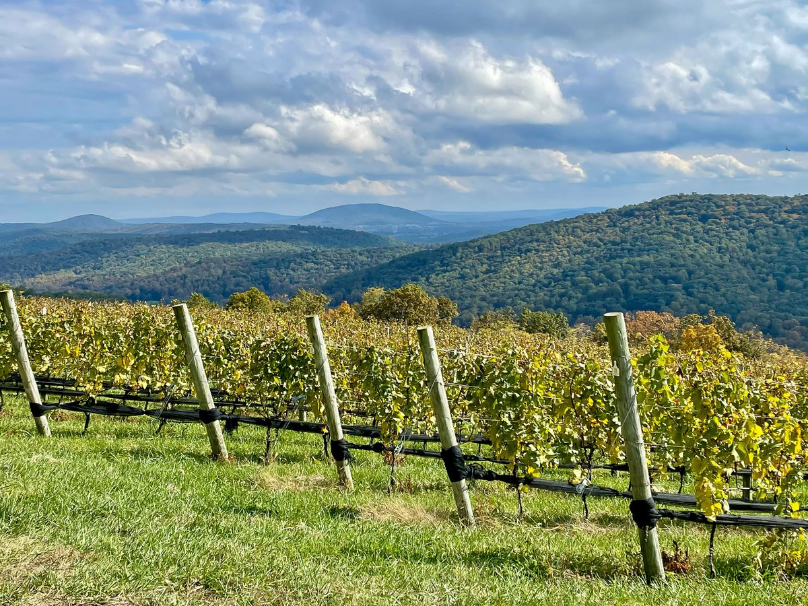
Fox Meadow Winery tasting room - indoor seating with mountain views and seasonal live music
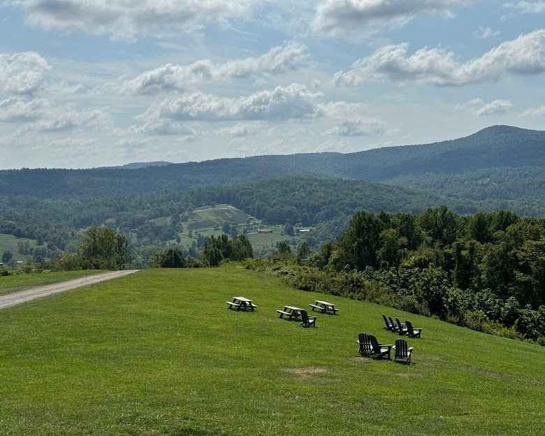
Local vineyard landscape showcasing Blue Mountain's ideal cool-climate conditions for winemaking
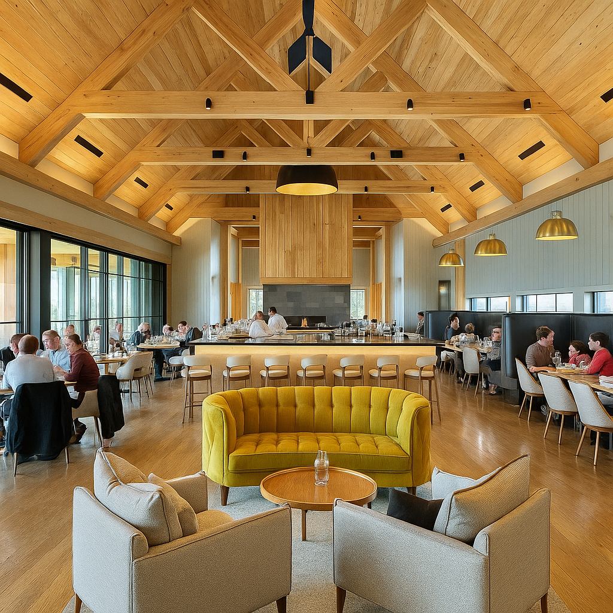
Enhanced interior view of local winery showcasing the rustic mountain elegance of Blue Mountain wine facilities
Lush summer vineyard showing the ideal growing conditions that Blue Mountain's elevation provides for wine grapes
WINERIES ON THE MOUNTAIN
Blue Mountain's elevation and soil create ideal cool-climate conditions for vinifera grapes. Local wineries collaborate through shared crush facilities and joint events, creating a vibrant wine community.
Fox Meadow Winery
Address: 3310 Freezeland Rd, Linden, VA 22642
Hours: Fri–Sun, 12 PM – 6 PM (check website for holiday hours)
Specialties: Chardonnay, Cabernet Franc, Blueberry wine
Features: Indoor seating, outdoor patio, seasonal live music, sunset vineyard views
Events: Friday "Wine & Dine" pairing dinners; charity tastings
Capstone Vineyards
Address: 13400 Crimson Ln, Linden, VA 22642
Hours: Sat–Sun, 11 AM – 5 PM (reservations recommended on weekends)
Specialties: Viognier, Petit Verdot, seasonal fruit wines (peach, strawberry)
Features: Tasting pavilion, panoramic views, farm-to-table events, seasonal grape harvest
Facilities: Outdoor terrace, wedding gazebo, guided vineyard tours
Events: Annual Harvest Festival (Sept–Oct); weekend live music (May–Sept)
Crimson Lane Vineyards
Address: 13334 Crimson Ln, Linden, VA 22642
Specialties: Merlot, Malbec, proprietary red blends, small-batch rosé
Features: Small-batch, limited-edition wines; on-site picnic areas; wood-fired pizza weekends
Facilities: Elevated picnic terrace, firepits, wood-fired pizza oven on weekends
Membership: Wine club (quarterly shipments, limited releases, 10% discount)
B. ONLINE RESOURCES
FACEBOOK GROUPS
Blue Mountain POA Group
Type: Private, members-only group
Purpose: Informal community communication and updates
Content: Event announcements, neighbor networking, informal updates
Important: Official BMPOA information always posted first on BMPOA.org - Facebook is supplemental
Blue Mountain Info Exchange
Mission: "The purpose of this forum is to foster a sense of community among our neighbors and exchange information that is pertinent to the mountain (Linden, VA). We are all neighbors, regardless of whether or not we've met each other in person. Blue Mountain is a wonderful place to be and let's hope that this group makes it a little easier for everyone to keep up to date on what's going on."
Use Cases: Weather alerts, downed trees, power outages, vendor referrals, local incident updates
Focus: Foster community sense, share pertinent mountain information
Blue Mountain Rescue Brigade
Mission: "Blue Mountain Rescue Brigade ... is a group of us who want to do our best to ensure the wealth, life, property and safety of our mountain friends. Be it the 2-legged kind or the 4-legged type. This is intended to HELP local emergency crews and law enforcement, NOT REPLACE IT. Everyone should still dial 911 first. Then 'light-up' this site."
Purpose: Volunteer support network to assist emergency responders during crises
Scope: Medical emergencies, search & rescue, missing persons, wildlife issues
Emergency Protocol: Always dial 9-1-1 first, then notify Rescue Brigade for additional neighbor support
Responsible Use: Only post verified emergencies; avoid spam
HIKING TRAILS ON BLUE MOUNTAIN
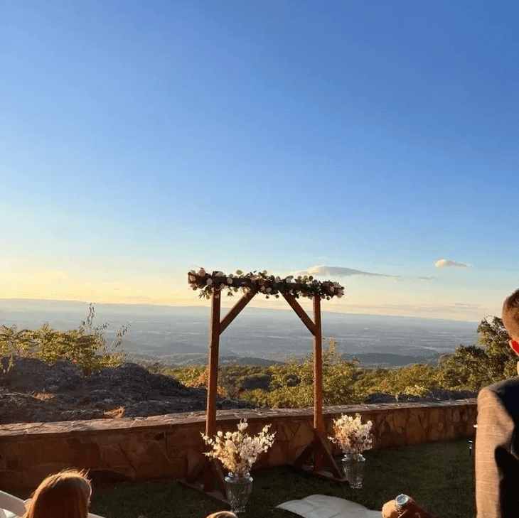
Springtime overlook from Blue Mountain showing ridge-top vista with blooming shrubs
Trailhead Access & Parking
Blue Mountain Trailhead
GPS: 38.9604° N, 78.4703° W
Parking: Free gravel lot (~20 spaces); portable restroom onsite
Sign: "Blue Mountain Overlook Trail" with map of interconnected loops
Freezeland Road Connector (Unofficial Parking)
Parking: Small pull-off (fits ~3 vehicles) on gravel road (low clearance)
Access: Unmarked 0.2 mi path through mixed hardwood forest to main trail network
Appalachian Trail Junction
Location: Official AT parking lot off Rt 340/211 (approx. 10 mi north of Blue Mountain)
Signage: "Blue Mountain Spur" indicates side trail down to BMPOA ridge
C. NEWSLETTER & ANNOUNCEMENTS
TRAIL DIFFICULTY & LENGTH
Easy (Beginner)
Deer Run Loop: 1.2 mi loop, < 200 ft elevation gain, well-graded footpath, minimal obstacles
Features: Interpretive signage, creek crossings, benches
Moderate
Blue Ridge Overlook Trail: 3.5 mi out-and-back, ~ 800 ft elevation gain
Highlights: Panoramic overlook at ~2,000 ft, rock outcrops, excellent sunrise/sunset views
Strenuous
Appalachian Connector Trail: 5.2 mi one-way to AT summit (~ 1,200 ft elevation gain)
Details: Trailhead shared with AT parking; steep switchbacks, rocky scrambles, ladder bridges
TRAIL FEATURES & POINTS OF INTEREST
Scenic Overlooks
- Eagle's View: 0.5 mi from trail start; 180° vista of Shenandoah Valley and ridgelines
- Sunset Rock: South-facing ledge, popular fall-foliage photo spot
Flora & Fauna
- Spring Ephemerals: Trilliums, Virginia bluebells, Dutchman's breeches (late April–May)
- Summer Berries: Blackberries and blueberries (July–Aug) along Deer Run Loop
- Birdwatching: Warblers (Blackburnian, Cerulean), thrushes, occasional bald eagles
- Fall Foliage: Peak mid-October; maples, oaks, birches create patchwork of color
- Wildlife: White-tailed deer, occasional black bear sightings—exercise caution
Historical Points
- Abandoned Cabin Foundation: ~ 0.8 mi on Blue Ridge Overlook Trail - remnants of mid-1800s settler cabin
- Old Springhouse Ruins: ~ 1.5 mi on Appalachian Connector Trail - early mountain settlers' spring water collection
SAFETY & PREPAREDNESS
Essential Gear
- Sturdy hiking boots (ankle support), moisture-wicking layers, rain shell
- Map & compass or GPS device (cell service is spotty on ridge)
- ≥ 2 L water per person (filtered water sources unreliable)
- High-energy snacks (trail mix, energy bars, jerky)
- First-aid kit, headlamp/flashlight with extra batteries, whistle, emergency bivy
Trail Etiquette
- Leave No Trace: Pack out all trash, do not pick plants or disturb wildlife
- Right of Way: Uphill hikers have right of way over downhill hikers
- Dogs: Leashed at all times; owners must clean up after them
- Group Size: ≤ 8 people to minimize impact and noise
SEASONAL CONSIDERATIONS
Spring
Muddy sections, runoff crossings—waterproof boots recommended
Summer
Ticks & chiggers prevalent—use insect repellent; avoid dawn/dusk in dense brush
Fall
Leaf-covered roots/rocks can be slippery—carry headlamp if hiking near dusk; peak foliage mid-October
Winter
Ice on rock scrambles—microspikes or crampons recommended; heavy snow may close trails (check BMPOA.org)
IX
CONTACTS & RESOURCES
Emergency Numbers & Contact Directory
IX. CONTACTS & RESOURCES
A. BMPOA CONTACT DIRECTORY
BEAR SAFETY ON THE MOUNTAIN
Understanding bear behavior and prevention measures helps ensure safe coexistence with our mountain wildlife.
UNDERSTANDING BEAR BEHAVIOR
Black bears are intelligent and typically avoid humans; most conflicts occur because they seek out food attractants, not out of aggression.
Common Bear Attractants
- Bird feeders (April–November)
- Unsecured garbage cans left outdoors
- Pet food on porches or yards
- Grills with residual grease or scraps
- Fruit trees (ripe or fallen fruit)
- Compost piles containing meat, bones, or fatty kitchen scraps
- Coolers, trash, or scented items stored on porches/decks
Preventive Actions for Homeowners
- Remove bird feeders during active season or switch to bear-resistant models
- Store garbage in locked garage, shed, or bear-proof container; never leave trash outdoors overnight
- Feed pets indoors; clean up any food scraps immediately
- Clean grills after each use (burn off grease for 5 minutes, then cover)
- Use electric fencing around beehives, compost piles, and gardens
- Harvest ripe fruit promptly; remove fallen fruit daily
- Do not store any food or scented items on porches/decks
- Compost responsibly—no meat, bones, or fatty scraps; use enclosed compost bins if possible
HAZING & DETERRENTS
Safe Hazing Methods
- Paintballs aimed at the bear's rump (non-lethal, safe deterrent)
- Loud noises: air horns, shouting, banging pots/pans
- Motion-activated noise or lighting devices
- Always maintain an escape route—never corner a bear
IF YOU ENCOUNTER A BEAR
In Your Yard or Home
- Remain calm—do not run (running can trigger chase response)
- Identify an exit route; back away slowly while making noise
- If indoors, open doors to allow bear to exit; do not trap it
While Hiking
- Hike in groups; make noise around corners and dense vegetation
- Keep children close and dogs leashed
- If surprised at close range, speak calmly, back away slowly, and give the bear space
- Avoid direct eye contact
- If a bear charges: use bear spray if available; if contact is imminent, fight back using sticks, rocks, or your fists—aim for sensitive areas (nose, eyes)
Bear Behavior Myths Debunked
- Bears stand on hind legs to see/smell better—not always aggression
- Black bears' diet is ~80% plant-based (berries, nuts, insects)
- A mother with cubs usually flees or climbs a tree when threatened; attacks are rare if given space
- Bears communicate via body language and sounds; they have good color vision and detect movement well
- Relocating a problem bear often leads another to move into the vacated territory—address attractants instead
PLANT RIDGE & VALLEY NATIVES
WHY NATIVE PLANTS MATTER
- Stabilize soil, improve water quality (reduce erosion/runoff)
- Provide habitat/food for pollinators (bees, butterflies) and wildlife (birds, small mammals)
- Sequester more CO₂ than non-native species, aiding climate mitigation
- Enhance biodiversity and ecosystem resilience in the Ridge & Valley region
RECOMMENDED NATIVE SPECIES
Perennials & Ground Cover
- Bloodroot (Sanguinaria canadensis)
- Wild Geranium (Geranium maculatum)
- Trillium (Trillium grandiflorum)
- Dutchman's Breeches (Dicentra cucullaria)
- Wild Bee Balm (Monarda fistulosa)
- Foam Flower (Tiarella cordifolia)
- Wild Ginger (Asarum canadense)
- Milkweed (Asclepias spp.)
- Narrow-Leaf Mountain Mint (Pycnanthemum tenuifolium)
Vines
- Coral Honeysuckle (Lonicera sempervirens)
- Dutchman's Pipe (Aristolochia macrophylla)
- Virgin's Bower (Clematis virginiana)
- Virginia Creeper (Parthenocissus quinquefolia)
Shrubs
- Oak Leaf Hydrangea (Hydrangea quercifolia)
- Shrubby St. John's Wort (Hypericum prolificum)
- Arrowwood Viburnum (Viburnum dentatum)
- Chokeberry (Aronia arbutifolia)
- Mountain Laurel (Kalmia latifolia)
- Winterberry (Ilex verticillata)
B. EMERGENCY NUMBERS
NATIVE PLANT RESOURCES
Where to Buy Native Plants
- Seven Bends Nursery: Berryville, VA (sevenbends.org)
- Yellow House Natives: Berryville (via VA Native Plant Society: vaplantatlas.org)
- Virginia Plant Atlas: vaplantatlas.org (distribution maps, seed sources)
- Plant Virginia Natives: plantvirginianatives.org (download "Plant Ridge & Valley Natives" PDF)
Deer-Resistant Native Trees
- American Holly (Ilex opaca)
- Black Gum (Nyssa sylvatica)
- Cucumber Magnolia (Magnolia acuminata)
- Eastern Red Cedar (Juniperus virginiana)
- Pawpaw (Asimina triloba)
- Sassafras (Sassafras albidum)
- Tulip Poplar (Liriodendron tulipifera)
- Witch Hazel (Hamamelis virginiana)
Additional Community Resources
Internet Providers: Xfinity (1-855-399-1542), Starlink (Starlink.com)
Waste Management: Freedom Disposal (540-631-3467), Skyline Trash Service (540-974-9418)
Fire Weather: Virginia Department of Forestry (partnership with BMPOA for fire mitigation)
IMPORTANT REMINDERS
- Cell Service: Spotty coverage on mountain ridges - identify nearest cell tower pickup points
- Emergency Preparedness: Maintain emergency supplies, evacuation plans, and family communication plans
- Community Support: Blue Mountain Rescue Brigade provides neighbor assistance after calling 9-1-1
- Wildlife Safety: Follow bear-safe practices; report wildlife conflicts to DWR